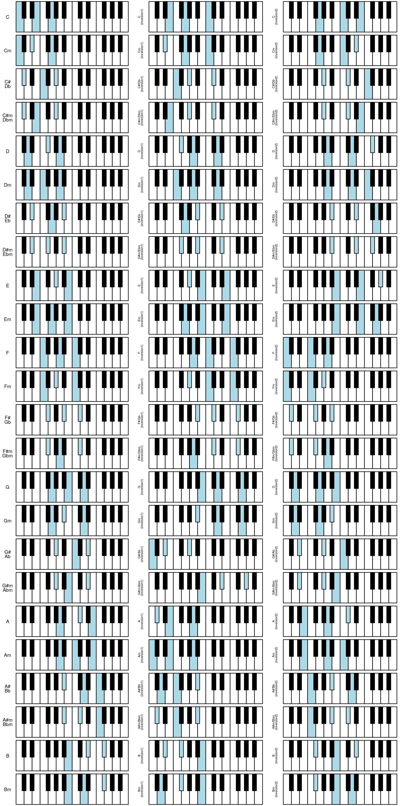

exhaustive-chart.Rmdlibrary(dplyr)
library(tidyr)
library(forcats)
library(ggplot2)
library(grid)
library(gridExtra)
library(pichor)d_tones <- keys_coords %>%
filter(key <= 12) %>%
rowwise() %>%
mutate(tone = tones[1]) %>%
select(key, tone, label)d_tones_chords <- d_tones %>%
rowwise() %>%
mutate(
major = list(construct_chord_major(root_tone = tone)),
minor = list(construct_chord_minor(root_tone = tone))) %>%
gather(type, chord, c(major, minor)) %>%
rowwise() %>%
mutate(root = list(get_keys(chord))) %>%
mutate(inversion1 = list(get_keys_inversion(chord = chord, inversion = 1)),
inversion2 = list(get_keys_inversion(chord = chord, inversion = 2))) %>%
select(-chord) %>%
gather(variant, keys, c(root, starts_with("inversion"))) %>%
mutate(variant = fct_inorder(variant)) %>%
mutate(tone = fct_inorder(tone)) %>%
# mutate(caption = paste0(type, " ", label, " (", variant, ")"),
# caption = gsub("\n", "/", caption, fixed = TRUE),
# caption = gsub(" (root)", "", caption, fixed = TRUE),
# caption = gsub(" (", "\n(", caption, fixed = TRUE)
# ) %>%
mutate(caption = case_when(
type == "major" ~ paste0(label, " (", variant, ")"),
type == "minor" ~ case_when(
grepl("\n", label, fixed = TRUE) ~ paste0(
gsub("^(.*)\n(.*)$", "\\1m/\\2m", label),
" (", variant, ")"),
TRUE ~ paste0(label, "m (", variant, ")")))) %>%
mutate(caption = gsub("\n", "/", caption, fixed = TRUE),
caption = gsub(" (root)", "", caption, fixed = TRUE),
caption = gsub(" (", "\n(", caption, fixed = TRUE)) %>%
mutate(caption = case_when(
!grepl("(", caption, fixed = TRUE) ~ gsub("/", "\n", caption, fixed = TRUE),
TRUE ~ caption
)) %>%
arrange(tone, type, variant)
d_tones_chords
#> # A tibble: 72 x 7
#> key tone label type variant keys caption
#> <int> <fct> <chr> <chr> <fct> <list> <chr>
#> 1 1 C C major root <dbl [3]> C
#> 2 1 C C major inversion1 <dbl [3]> "C\n(inversion1)"
#> 3 1 C C major inversion2 <dbl [3]> "C\n(inversion2)"
#> 4 1 C C minor root <dbl [3]> Cm
#> 5 1 C C minor inversion1 <dbl [3]> "Cm\n(inversion1)"
#> 6 1 C C minor inversion2 <dbl [3]> "Cm\n(inversion2)"
#> 7 2 C# "C#\nDb" major root <dbl [3]> "C#\nDb"
#> 8 2 C# "C#\nDb" major inversion1 <dbl [3]> "C#/Db\n(inversion1)"
#> 9 2 C# "C#\nDb" major inversion2 <dbl [3]> "C#/Db\n(inversion2)"
#> 10 2 C# "C#\nDb" minor root <dbl [3]> "C#m\nDbm"
#> # … with 62 more rowsfigures <- vector("list", nrow(d_tones_chords))
for (i in seq_along(figures)) {
row <- d_tones_chords %>% slice(i)
size <- 2
angle <- 90
if (row %>% pull(variant) == "root") {
size <- 3
angle <- 0
}
p <- keys_coords %>%
highlight_keys(keys = row %>% pull(keys) %>% unlist()) %>%
ggpiano(labels = FALSE) +
annotate(geom = "text", x = -0.075, y = 0.5,
size = size,
lineheight = 0.75,
label = row %>% pull(caption),
color = "black",
angle = angle)
if (row %>% pull(variant) == "root") {
p <- p +
theme(plot.margin = unit(c(0, 0, 0, 0.1), "cm"))
}
figures[[i]] <- p
}nrows <- d_tones_chords %>% distinct(tone, type) %>% nrow()
stopifnot(nrow(d_tones_chords) %% nrows == 0)
ncols <- nrow(d_tones_chords) / nrows